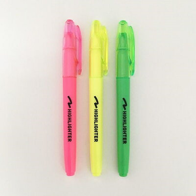
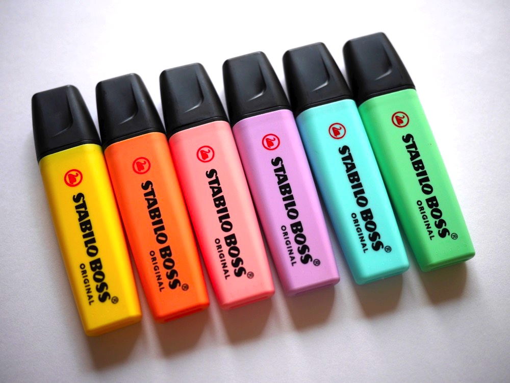
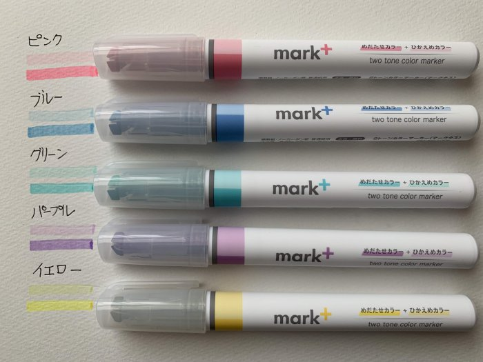

これは蛍光ペンです。

蛍光ペンとはフェルトペンのうち、半透明の蛍光性インク（水性蛍光顔料インクなど）を用いたものである。
形態としては、2つある。他の一般筆記用具で記した文字ないし印刷文字の上から、重要な語句などに重ねてラインを引く用途に用いるラインマーカーの一種である。半透明であるため重ね塗りされた文字を読みやすく、また蛍光色で目立つ。主に学生やビジネスマンに使用され、コクヨグループ会社が有職者を対象に2015年に実施した調査によれば約8割に使用されている。
蛍光ペンの歴史
- ドイツのスタビロ（英語版）によれば、1971年に同社が世界初の蛍光ペン「STABILO BOSS」を発売した。
- トンボ鉛筆によれば、1974年に同社が国産初の蛍光ペン「暗記ペン蛍光」を発売した。
- ゼブラによれば、最初の太・細両頭の蛍光ペンは1975年に同社が発売した「蛍光ペン2」とされる。このアイデアは同社の「ハイマッキー」開発にも活かされた。
- 2000年、三菱鉛筆はペン先に透明な窓を設け、書く際の視認性を改善した「プロパス・ウィンドウ」を発売した。
- 2006年11月、パイロットコーポレーションはラバーで擦るとインクが消えるラインマーカー「フリクションライン」を発売。
- 2008年10月には蛍光インクを使用した「フリクションライト」を発売した。
- 2014年4月9日、コクヨは1本で異なる2色を書き分けることができる「ビートルティップ・デュアルカラー」を発売した。
- 2020年2月12日には、1本で濃い色と淡い色を書き分けることができる「マークタス」を発売した。

↑STABILO BOSS

↑マークタス